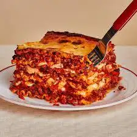

Lasagna
Home

About Lasagna
Lasagna is a classic Italian dish made with layers of pasta sheets, rich meat or vegetable sauce, creamy cheese, and herbs, baked to perfection for a hearty and comforting meal.
Ingredients:
- Lasagna noodles
- Ground beef or sausage (or a vegetarian alternative)
- Olive oil
- Garlic (minced)
- Onion (diced)
- Tomato sauce
- Diced tomatoes
- Italian seasoning (or a mix of oregano, basil, and thyme)
- Ricotta cheese
- Mozzarella cheese (shredded)
- Parmesan cheese (grated)
- Egg
- Nutmeg (a pinch, optional)
- Salt
- Black pepper
- Fresh parsley or basil (chopped, for garnish)
Instructions:
- To make lasagna, start by preparing the meat sauce by sautéing minced garlic and onion in olive oil, then browning ground beef or sausage.
- Add tomato sauce, diced tomatoes, and Italian seasoning, and let it simmer.
- For the cheese layer, mix ricotta, shredded mozzarella, Parmesan, an egg, and a pinch of nutmeg.
- In a baking dish, layer cooked lasagna noodles, meat sauce, and cheese mixture, repeating until full and finishing with a generous layer of mozzarella on top.
- Bake in a preheated oven at 375°F (190°C) for 25-30 minutes until bubbly and golden. Let it cool for 10 minutes before serving. Enjoy!